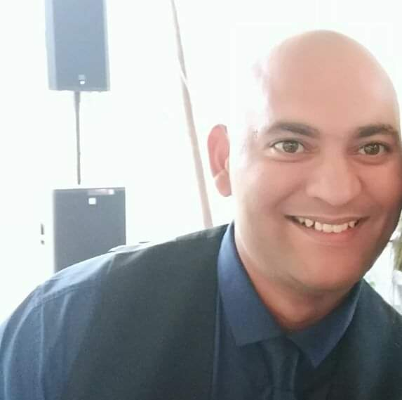

Curriculum Vitae of Wilbur Burger

Summary
As a self-employed professional with a robust background in aviation, risk management,
and customer service, I am learning web development in order to develop new skills in which to grow.
With a demonstrated high level of commitment and a strong work ethic, I bring a wealth of
experience to roles that require dedication and perseverance.
My expertise extends to facilitating learning and fostering the realization of individual potential.
I find great fulfillment in helping others grow and succeed. Additionally, my passion for sports
not only drives my personal participation but also extends to coaching, where I have the opportunity
to inspire and guide individuals to achieve their athletic goals.
I am eager to leverage my diverse skill set, contributing to a dynamic work
environment while continuing to pursue my professional and personal interests.
Education
- National Diploma in Safety Management at Unisa completed 2019.
- SAMTRAC with distinction completed at NOSA on 29 May 2015
- Matric completed at Harold Cressy High School in 1999
Work Experience
- Position: Self-employed Company: We Clean Bins / Aegis Safety Duration: Sept 22 – present
- Position: Risk Controller Company: The Foschini Group Duration: Jan 2017 – Aug 2022
- Position: Air Traffic Controller Company: South African Air Force Duration: Jan 2007 – Nov 2014
- Position: Safety Officer Company: South African Air Force Duration: Jan 2010 – Nov 2014
- Position: Command Post Assistant Company: South African Air Force Duration: Jan 2004 – Dec 2006
- Position: Pupil Pilot Company: South African Air Force Duration: Oct 2001 – Dec 2003
Skills
- I am good at communication with stakeholders of various levels of business acumen
- I am good at facilitating in various situations such as training, meetings etc. to ensure that we reach a consensus
- Being an Air traffic controller has given me the ability to multi task and work well under pressure
- I am very good with numbers, trend analysis and reporting
- I work well on my own and I enjoy working in a team setting as well
- I have a calm nature and can adapt easily to different situations
Professional Development
- First Aid level 1 & 2
- Officers Formative Course
- Command and Control Instructors Course
- Air traffic control: Validated Tower (2007) and Approach (2012)
- Competent with Microsoft Office
Click on Personal to learn more about me
Contact Details